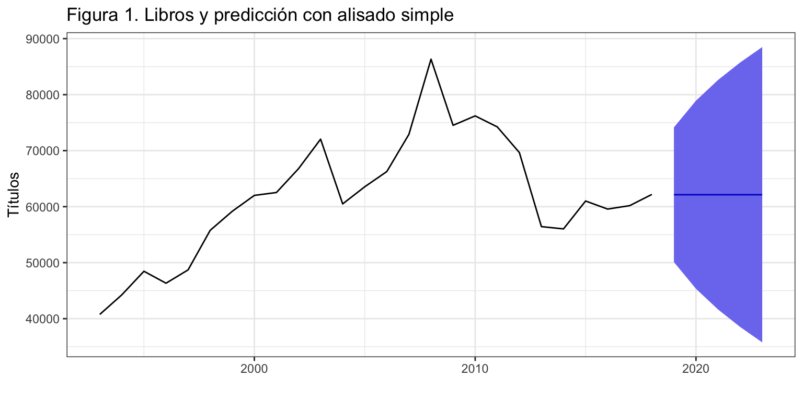
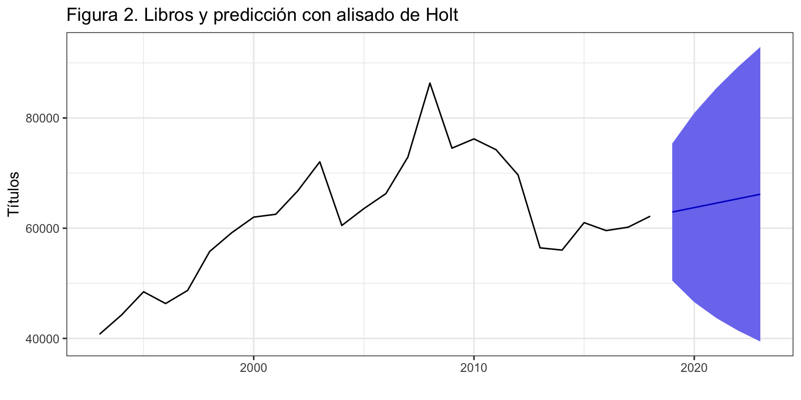
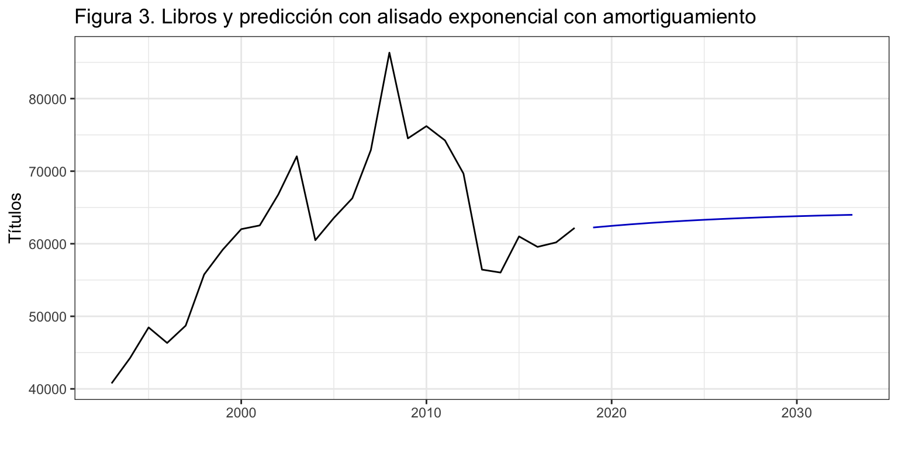
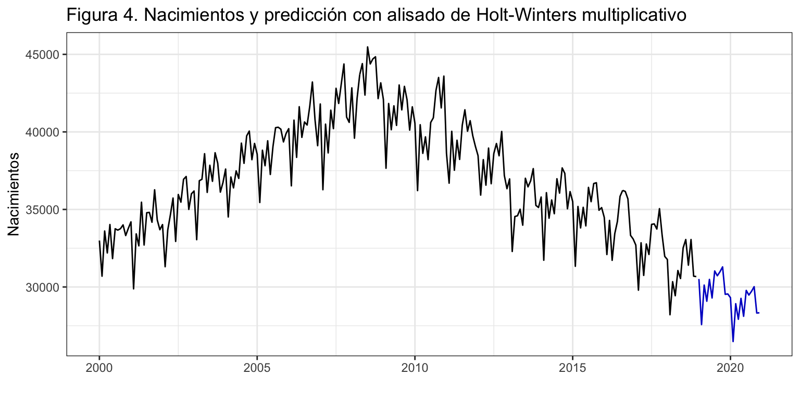
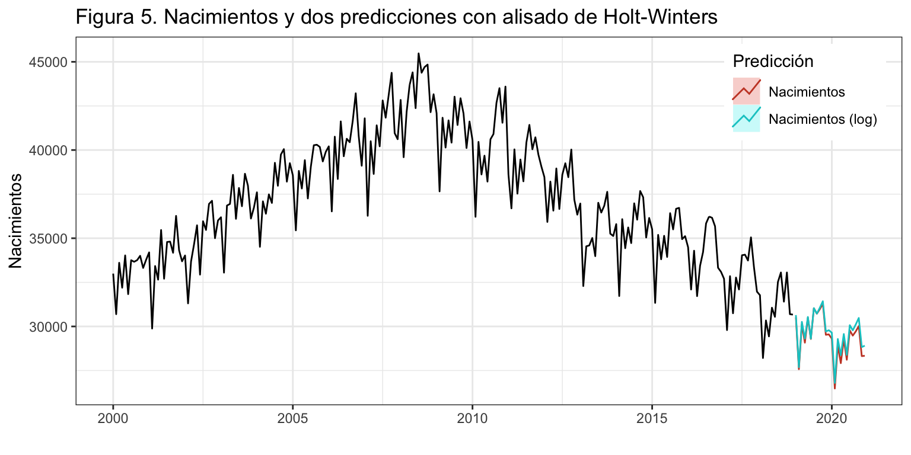
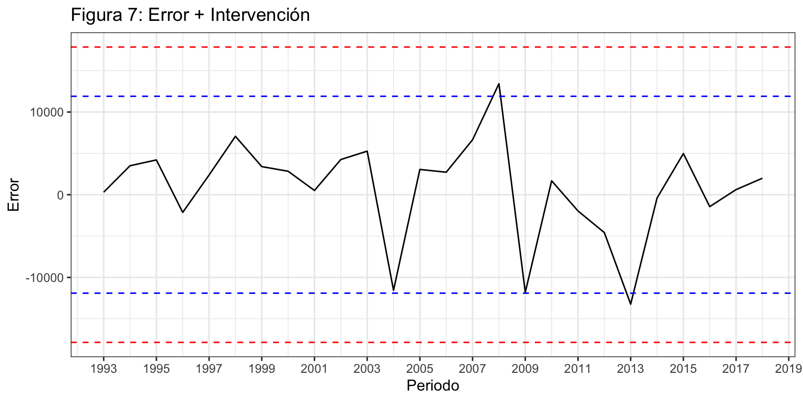
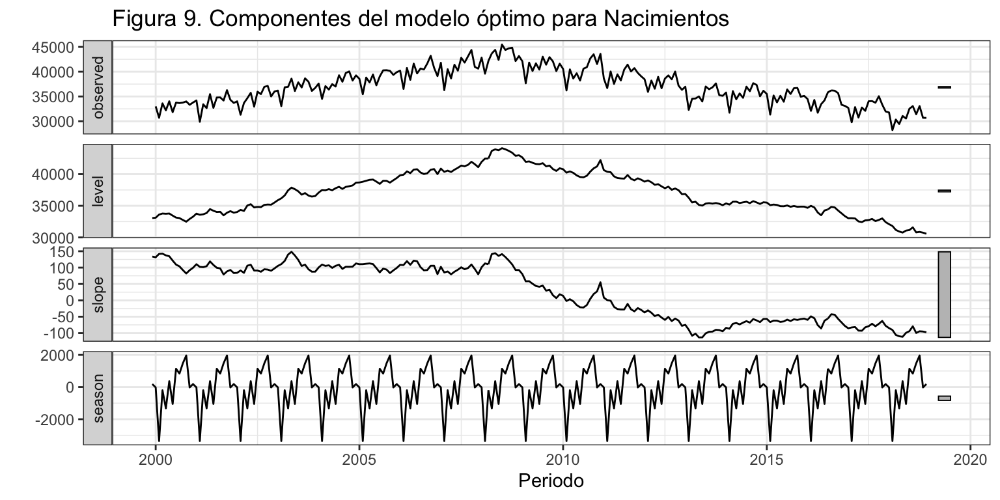

Introducción
Los métodos de alisado exponencial aparecen en los años 50 de la mano de Brown, Holt y Winters y han sido la raíz de uno de los métodos de predicción más sencillos y eficaces. La idea básica es predecir usando una media ponderada de los datos pasados, donde los más recientes tienen un peso mayor y este decae exponencialmente conforme usamos observaciones más antiguas.
El alisado exponencial es una familia de métodos de ajuste y previsión que ofrece muy buenos resultados para predicciones a corto plazo o para predecir series con pocos datos o sencillas (sin mucho ruido).
Suponen un grado de modelización mayor que los métodos sencillos vistos previamente, pero sin alcanzar la complejidad de otras metodologías (modelos ARIMA).
En origen, son métodos descriptivos con el único objetivo de producir predicciones puntuales. Sin embargo, su enfoque como modelos de espacio de estados posibilita un marco teórico para obtener intervalos de predicción.
Componentes de una serie en el contexto del alisado exponencial
Para obtener una predicción en el periodo \(t+1\) con datos hasta el periodo \(t\) necesitamos tres componentes:
- La estimación del nivel de la serie en el periodo \(t\): \(l_t\)
- La estimación de la pendiente de la serie en el periodo \(t\): \(b_t\)
- La estimación de la estacionalidad en el mes correspondiente al periodo \(t+1\) con datos hasta \(t\): \(s_{t + 1 - m}\) (recuerda, \(m\) es el orden estacional
A partir de estas componentes, obtenidas en el periodo \(t\) y para un esquema aditivo, se tendría que la predicción en el periodo \(t+1\) es: \[\widehat{y}_{t+1} = l_t+b_t+s_{t+1-m}.\] En general, las componentes pueden existir o no y se pueden combinar entre ellas aditiva o multiplicativamente. Veamos algunos casos:
- Existen todas y son multiplicativas: \[\widehat{y}_{t+1}=l_t \cdot b_t \cdot s_{t + 1 - m}\]
- Existen todas, nivel y pendiente aditivas, y estacionalidad multiplicativa: \[\widehat{y}_{t+1}=(l_t+b_t)s_{t + 1 - m}\]
- No hay pendiente y la estacionalidad es aditiva: \[\widehat{y}_{t+1}=l_t+s_{t + 1 - m}\]
¿Como obtenemos los valores de \(l_t\), \(b_t\) y \(s_{t + 1 - m}\)? Mediante expresiones recursivas, donde cada componente se calcula a partir de los valores hasta \(t\) de la serie y de las componentes: \[
\begin{aligned}
l_t& = f_l(y_t,y_{t-1}\ldots, l_{t-1},l_{t-2}\ldots,b_{t-1},b_{t-2}\ldots,s_{t-1},s_{t-2}\ldots) \\
b_t& = f_b(y_t,y_{t-1}\ldots, l_{t},l_{t-1}\ldots,b_{t-1},b_{t-2}\ldots,s_{t-1},s_{t-2}\ldots) \\
s_t& = f_s(y_t,y_{t-1}\ldots, l_{t},l_{t-1}\ldots,b_{t},b_{t-1}\ldots,s_{t-1},s_{t-2}\ldots)
\end{aligned}
\] Por ejemplo, el método ingenuo I se puede interpretar dentro de este contexto como un método de alisado donde \(l_t = y_t\) y no hay ni pendiente ni estacionalidad. Por tanto, \(\widehat{y}_{T+1} = l_{T} = y_{T}\).
De la misma forma, el método ingenuo II se puede interpretar como un método de alisado donde \(l_t = y_t\), \(b_t = y_t - y_{t-1}\) y no hay estacionalidad. Entonces, \(\widehat{y}_{T+1}=l_T + b_T = y_T + (y_T - y_{T-1})\).
En las expresiones previas hemos supuesto que se quería obtener una predicción a un periodo vista (\(\widehat{y}_{t+1}\)). Si el objetivo es estimar una previsión \(h\) periodos hacia delante desde el periodo \(t\), \(\widehat{y}_{t+h}\), hay que modificar la ecuación de predicción adecuadamente. Por ejemplo, para el caso aditivo se tendría que \[\widehat{y}_{t+h} = l_t+hb_t+s_{t+h-m(k+1)}\] donde \(k = \lfloor (h-1)/m\rfloor\).
El concepto de componentes aquí visto no coincide con el definido en el Tema 1. Sin embargo, podemos asimilar la tendencia de una serie como la suma (multiplicación) del nivel y la pendiente \(T_{t+1} = l_t + b_t\) (\(T_{t+1} = l_t \cdot b_t\)) y de esta forma ambas definiciones de componentes de una serie se hacen compatibles.
Casos posibles
Todas las series tiene nivel, pero dependiendo del tipo de pendiente y estacionalidad hay 15 casos posibles, mostrados en la tabla siguiente.
|
Ninguna (N) |
Aditiva (A) |
Multiplicativa (M) |
| Ninguna (N) |
N, N |
N, A |
N, M |
| Aditiva (A) |
A, N |
A, A |
A, M |
| Aditiva Amortiguada (Ad) |
Ad, N |
Ad, A |
Ad, M |
| Multiplicativa (M) |
M, N |
M, A |
M, M |
| Multiplicativa Amortiguada (Md) |
Md, N |
Md, A |
Md, M |
Cada caso difiere en las componentes que se observan y su esquema, dando lugar a un conjunto diferente de ecuaciones recursivas de actualización.
Si se añade que el error puede ser aditivo o multiplicativo, da 30 posibilidades. El tipo de error (aditivo o multiplicativo) no afecta ni a la estimación ni a la previsión puntual, sólo es relevante en el cálculo del intervalo de confianza de las predicciones.
Los modelos más usuales son:
- (N, N): Alisado exponencial simple
- (A, N): Alisado de Holt
- (Ad, N): Alisado con tendencia amortiguada (d de damped)
- (A, A): Alisado de Holt-Winters aditivo
- (A, M): Alisado de Holt-Winters multiplicativo
Acude al artículo de Rob J. Hyndman y Yeasmin Khandakar (2008) para saber más de cada modelo, o al libro Forecasting with Exponential Smoothing: the State Space Approach (2008) de Hyndman y otros autores.
Alisado exponencial simple (N, N)
Definición
El alisado exponencial simple es adecuado para una serie estacionaria y sin estacionalidad. Es decir, una serie que se mueve alrededor de un nivel constante.
La ecuación de la predicción intra-muestral es \[\widehat{y}_{t+1} = \alpha y_t + \alpha (1-\alpha) y_{t-1} + \alpha (1-\alpha)^2 y_{t-2} + \alpha (1-\alpha)^3 y_{t-3} + \ldots = \alpha y_t + (1-\alpha)\widehat{y}_{t},\] donde \(0 \leq \alpha \leq 1\) es el parámetro de suavizado. La primera predicción extra-muestral queda \[\widehat{y}_{T+1}=\alpha y_T + (1-\alpha)\widehat{y}_{T}\] y para las restantes \[\widehat{y}_{T+h} = \widehat{y}_{T+1}.\]
Estimación de los parámetros del modelo
Dado el proceso iterativo para el cálculo de \(l_t\) se necesita un valor inicial de arranque \(l_0\). Cada programa estadístico usa su propio método para obtener \(l_0\).
Respecto de \(\alpha\), usualmente se estima el valor optimo según un criterio de precisión de la predicción. El parámetro \(\alpha\) se puede interpretar como:
- Si \(\alpha = 1\) se tiene el método ingenuo I (\(\widehat{y}_{t+1}=y_t\)), óptimo cuando el nivel de la serie varía constantemente en el tiempo.
- Si \(\alpha = 0\) se tiene \(\widehat{y}_{t} =l_0\), óptimo cuando el nivel permanece constante en el tiempo.
Ejemplo
Vamos a usar el método de alisado exponencial simple para predecir la serie Libros. Usaremos para ello la función ses (simple exponential smoothing) con una previsión a 5 años vista (h = 5). Esta función estima los valores de \(l_0\) y \(\alpha\) que maximizan la función de verosimilitud, pero se pueden elegir otros criterios con el parámetro opt.crit.
libros <- read.csv2("./series/libros.csv", header = TRUE)
libros <- ts(libros[, 2], start = 1993, frequency = 1)
librosf <- ses(libros, h = 5, level = 95)
summary(librosf)
Forecast method: Simple exponential smoothing
Model Information:
Simple exponential smoothing
Call:
ses(y = libros, h = 5, level = 95)
Smoothing parameters:
alpha = 0.9756
Initial states:
l = 40846.9233
sigma: 6135.033
AIC AICc BIC
542.1615 543.2524 545.9358
Error measures:
ME RMSE MAE MPE MAPE MASE ACF1
Training set 839.0525 5894.349 4452.239 1.240605 7.032466 0.962355 -0.01829562
Forecasts:
Point Forecast Lo 95 Hi 95
2019 62131.07 50106.63 74155.52
2020 62131.07 45331.71 78930.44
2021 62131.07 41640.83 82621.32
2022 62131.07 38520.03 85742.12
2023 62131.07 35766.08 88496.07
Veamos la salida en detalle:
- El valor de \(\alpha\) que optimiza el criterio usado para medir la calidad del ajuste es \(\alpha =\) 0.98, un valor muy cercano a 1. Esto es un indicativo de que: i) la serie Libros cambia de nivel de forma constante, un rasgo en los procesos puramente estocásticos como el paseo aleatorio; y ii) el método de alisado exponencial simple se aproxima al método Ingenuo I.
- El valor de arranque \(l_0\) óptimo es 40846.92.
- sigma es la desviación típica del error (aditivo) de predicción. Se diferencia de RMSE en el denominador. Para calcular sigma en lugar de dividir por \(T\) se divide por \(T\) menos el número de parámetros estimados (en este caso 3, \(l_0\), \(\alpha\) y sigma).
- La calidad del ajuste es razonable, como evidencia el error porcentual medio del 7%.
- Las predicciones son las mismas para los 5 años, como cabe esperar (recuerda que \(\widehat{y}_{T+h} = l_T\)).
tail(librosf$model$states, n = 4)
Time Series:
Start = 2015
End = 2018
Frequency = 1
l
[1,] 60887.22
[2,] 59599.15
[3,] 60170.73
[4,] 62131.07
En el objeto librosf la matriz librosf$model$states guarda todos los valores del nivel obtenidos con la ecuación recursiva, incluidos el valor de arranque, así que es una matriz con \(T+1\) filas. Puedes ver el valor de \(l_{2018}\) en su última fila, que vale 62131.07. Así, la predicción para \(2019\) es \(\widehat{y}_{2019}=l_{2018}=\) 62131.07. Igualmente \(\widehat{y}_{2020}=l_{2018}=\) 62131.07. Es decir, todas las previsiones son iguales a \(l_{2018}\).
La figura 1 muestra la serie Libros, las previsiones extra-muestrales que son constantes y el intervalo de confianza. Conforme aumentamos el horizonte de predicción, el intervalo de confianza es más amplio como reflejo de la mayor incertidumbre en la predicción.
autoplot(librosf,
xlab = "",
ylab = "Títulos",
main = "Figura 1. Libros y predicción con alisado simple")

Alisado exponencial de Holt (A, N)
El alisado exponencial de Holt es adecuado para una serie no estacionaria y sin estacionalidad.
Estimación de los parámetros del modelo
Para aplicar este método es necesario estimar unos valores iniciales \(l_0\) y \(b_0\) de las ecuaciones recursivas e identificar los valores más adecuados de los parámetros \(\alpha\) y \(\beta\). Los valores óptimos de estos cuatro parámetros se obtienen optimizando una medida de precisión de las predicciones.
La interpretación del parámetro \(\alpha\) es similar al caso del alisado exponencial simple.
Interpretación del parámetro \(\beta\):
- Si \(\beta = 1\), \(b_t = l_t - l_{t-1}\), la pendiente se actualiza constantemente porque varía periodo a periodo Puede ser un indicador de mal ajuste (tendencia no lineal o pendiente no aditiva).
- Si \(\beta = 0\), \(b_t = b_{t-1}= \ldots = b_0\), la pendiente se mantiene constante en el tiempo.
El método ingenuo II es un caso concreto de Alisado de Holt. Si hacemos \(\alpha=\beta = 1\), queda \(l_t=y_t\) y \(b_t=y_t-y_{t-1}\), por tanto \[\widehat{y}_{T+h}=l_T + h \cdot b_T = y_T + h(y_T - y_{T-1}).\]
Ejemplo
Vamos a usar el método de alisado de Holt para predecir de nuevo la serie Libros. Usaremos para ello la función holt con una previsión a 5 años vista (h = 5).
librosf <- holt(libros, h = 5, level = 95)
summary(librosf)
Forecast method: Holt's method
Model Information:
Holt's method
Call:
holt(y = libros, h = 5, level = 95)
Smoothing parameters:
alpha = 0.9513
beta = 0.0001
Initial states:
l = 41061.2751
b = 808.0212
sigma: 6342.639
AIC AICc BIC
545.6297 548.6297 551.9202
Error measures:
ME RMSE MAE MPE MAPE MASE ACF1
Training set 1.059887 5834.38 4235.524 -0.1683705 6.717033 0.9155118 0.00362974
Forecasts:
Point Forecast Lo 95 Hi 95
2019 62930.86 50499.52 75362.21
2020 63738.89 46580.48 80897.29
2021 64546.91 43706.74 85387.08
2022 65354.93 41391.54 89318.33
2023 66162.96 39438.34 92887.57
Los valores óptimos de los cuatro parámetros son \(\alpha=\) 0.95, \(\beta=\) 0, \(l_0 =\) 41061.28 y \(b_0 =\) 808.02. Observa que \(\alpha\) es prácticamente 1 y que \(\beta\) es cero. Si aplicamos estos valores de los parámetros a las ecuaciones recursivas y la predicción extra-muestral, obtenemos \(y_{T+h}=y_T + hb_0\): la predicción es el último valor observado más \(h\) veces la primera pendiente estimada.
La calidad de las predicciones es razonable, con un error porcentual medio del 6.7%, y se ha mejorado respecto del alisado exponencial simple.
tail(librosf$model$states, n = 4)
Time Series:
Start = 2015
End = 2018
Frequency = 1
l b
2015 60809.31 808.1407
2016 59666.92 807.9356
2017 60199.13 807.9066
2018 62122.84 808.0240
De nuevo, en el objeto librosf la matriz librosf$model$states guarda todos los valores obtenidos con las ecuaciones recursivas, en este caso el nivel y la pendiente, incluidos los valores de arranque. Puedes ver los valores de \(l_{2018}\) y \(b_{2018}\) en su última fila, que valen respectivamente 62122.84, 808.02. Así, la predicción para \(2019\) es \(\widehat{y}_{2019}=l_{2018} + b_{2018}=\) 62122.84 \(+\) 808.02 \(=\) 62930.86. Igualmente \(\widehat{y}_{2020}=l_{2018} + 2\cdot b_{2018}=\) 63738.89. Es decir, el incremento entre previsiones es contante e igual a \(b_{2018}\) que, por ser \(\beta\) prácticamente nulo, coincide con \(b_0\).
La figura 2 muestra la serie Libros y las previsiones extra-muestrales que muestran una ligera tendencia creciente.
autoplot(librosf,
xlab = "",
ylab = "Títulos",
main = "Figura 2. Libros y predicción con alisado de Holt")

Alisado exponencial con pendiente amortiguada (Ad, N)
Las previsiones con el método de Holt presentan siempre una pendiente constante. En previsiones a corto plazo esto no es un problema, pero para previsiones a largo plazo la experiencia indica que suele aparecer un sesgo de previsión. El alisado exponencial con pendiente amortiguada trata de corregir esta limitación. El mecanismo, propuesto por Gardner y McKenzie en 1985, es introducir un nuevo parámetro \(0 \leq \phi \leq 1\) que amortigua la tendencia hasta hacerla plana en el largo plazo.
Ejemplo
Vamos a usar el método de alisado con amortiguamiento para predecir, una vez más, la serie Libros añadiendo a la función holt el argumento damped = TRUE. Por razones prácticas el rango de búsqueda de \(\phi\) queda en el intervalo \([0.8, 0.98]\). En este caso, para ver el efecto del amortiguamiento vamos a fijar el valor de \(\phi\) a \(0.9\) y vamos a pedir un horizonte temporal más largo.
librosfd <- holt(libros, damped = TRUE, h = 15, phi = 0.9)
summary(librosfd)
Forecast method: Damped Holt's method
Model Information:
Damped Holt's method
Call:
holt(y = libros, h = 15, damped = TRUE, phi = 0.9)
Smoothing parameters:
alpha = 0.8885
beta = 0.0001
phi = 0.9
Initial states:
l = 39515.4609
b = 4345.5669
sigma: 6337.754
AIC AICc BIC
544.3801 547.3801 550.6706
Error measures:
ME RMSE MAE MPE MAPE MASE
Training set -610.6056 5695.848 3943.135 -1.422026 6.229522 0.8523118
ACF1
Training set 0.00189887
Forecasts:
Point Forecast Lo 80 Hi 80 Lo 95 Hi 95
2019 62238.63 54116.47 70360.79 49816.86 74660.40
2020 62465.35 51599.92 73330.77 45848.12 79082.58
2021 62669.39 49625.05 75713.74 42719.79 82619.00
2022 62853.04 47944.62 77761.45 40052.58 85653.49
2023 63018.31 46454.06 79582.57 37685.47 88351.16
2024 63167.06 45097.88 81236.24 35532.64 90801.49
2025 63300.94 43842.72 82759.15 33542.17 93059.71
2026 63421.42 42666.80 84176.05 31679.96 95162.89
2027 63529.86 41555.06 85504.67 29922.30 97137.43
2028 63627.46 40496.65 86758.26 28251.94 99002.97
2029 63715.29 39483.49 87947.10 26655.95 100774.64
2030 63794.34 38509.37 89079.32 25124.31 102464.38
2031 63865.49 37569.42 90161.56 23649.12 104081.86
2032 63929.52 36659.77 91199.28 22224.03 105635.01
2033 63987.15 35777.26 92197.05 20843.84 107130.47
La figura 3 muestra la serie Libros, su estimación (intra-muestral) y las predicciones a 15 años vista. Observa que la pendiente de las previsiones se amortigua en el tiempo, de forma que al principio las previsiones crecen más rápidamente que en los últimos años.
autoplot(librosfd,
xlab = "",
ylab = "Títulos",
main = "Figura 3. Libros y predicción con alisado exponencial con amortiguamiento",
PI = FALSE)

Alisado de Holt-Winters aditivo (A, A) y multiplicativo (A, M)
El método de alisado exponencial de Holt-Winters es adecuado para una serie con tendencia y con estacionalidad. Existen dos versiones según que el esquema sea aditivo o multiplicativo.
Alisado de Holt-Winters aditivo (A, A)
Las ecuaciones recursivas de actualización son: \[
\begin{aligned}
l_t & =\alpha (y_t - s_{t-m} ) + (1-\alpha)(l_{t-1}+b_{t-1}) \\
b_t & =\beta (l_t - l_{t-1}) + (1-\beta)b_{t-1} \\
s_t & =\gamma (y_t - l_{t-1} - b_{t-1}) + (1 - \gamma)s_{t-m}
\end{aligned}
\] con \(0 \leq \alpha, \beta, \gamma \leq 1\).
La ecuación de la predicción intra-muestral a un periodo vista es \[\widehat{y}_{t+1} = l_t + b_t + s_{t+1-m},\] de forma que la ecuación de predicción extra-muestral es: \[\widehat{y}_{T+h}=l_T + h b_T + s_{T+h - m(k+1)},\] con \(k = \lfloor(h-1)/m\rfloor\).
Alisado de Holt-Winters multiplicativo (A, M)
Las ecuaciones recursivas de actualización son: \[
\begin{aligned}
l_t & =\alpha \frac{y_t}{s_{t-m}} + (1-\alpha)(l_{t-1}+b_{t-1}) \\
b_t & =\beta (l_t - l_{t-1}) + (1-\beta)b_{t-1} \\
s_t & =\gamma \frac{y_t}{l_{t-1} + b_{t-1}} + (1 - \gamma)s_{t-m}
\end{aligned}
\]
La ecuación de la predicción intra-muestral a un periodo vista es \[\widehat{y}_{t+1} = (l_t + b_t)s_{t+1-m},\] de forma que la ecuación de predicción extra-muestral es: \[\widehat{y}_{T+h}=(l_T + h b_T)s_{T+h - m(k+1)}.\]
Ejemplo
Vamos a usar el método de Holt-Winters para predecir la serie Nacimientos, que presentaba un esquema multiplicativo. Para ello usaremos la función hw con el argumento seasonal = "multiplicative" (que sería seasonal = "additive" en caso de esquema aditivo). Vamos a considerar la serie Nacimientos desde enero de 2000 y pedir una previsión a dos años vista.
nacimientos <- read.csv2("./series/nacimientos.csv", header = TRUE)
nacimientos <- ts(nacimientos[, 2],
start = c(1975, 1),
frequency = 12)
nacimientosb <- window(nacimientos, start = 2000)
nacimientosbf <- hw(nacimientosb, seasonal = "mult", h = 24)
summary(nacimientosbf)
Forecast method: Holt-Winters' multiplicative method
Model Information:
Holt-Winters' multiplicative method
Call:
hw(y = nacimientosb, h = 24, seasonal = "mult")
Smoothing parameters:
alpha = 0.3892
beta = 0.0148
gamma = 0.0425
Initial states:
l = 33009.2785
b = 145.6544
s = 1.0025 0.9974 1.0527 1.0436 1.0281 1.0366
0.9722 1.0146 0.9623 0.9901 0.9043 0.9958
sigma: 0.023
AIC AICc BIC
4329.668 4332.583 4387.967
Error measures:
ME RMSE MAE MPE MAPE MASE ACF1
Training set -74.07627 832.4718 662.566 -0.2262176 1.79118 0.4718897 0.0605442
Forecasts:
Point Forecast Lo 80 Hi 80 Lo 95 Hi 95
Jan 2019 30514.76 29617.09 31412.44 29141.88 31887.64
Feb 2019 27577.35 26701.93 28452.78 26238.50 28916.20
Mar 2019 30121.05 29094.43 31147.67 28550.97 31691.14
Apr 2019 29081.10 28021.40 30140.80 27460.42 30701.78
May 2019 30487.72 29304.26 31671.17 28677.78 32297.66
Jun 2019 29290.89 28083.51 30498.26 27444.37 31137.40
Jul 2019 31030.75 29676.27 32385.24 28959.25 33102.26
Aug 2019 30723.23 29306.62 32139.85 28556.71 32889.76
Sep 2019 30978.00 29472.49 32483.50 28675.53 33280.47
Oct 2019 31294.54 29694.70 32894.37 28847.80 33741.28
Nov 2019 29527.19 27942.21 31112.16 27103.17 31951.20
Dec 2019 29549.08 27886.35 31211.81 27006.15 32092.00
Jan 2020 29307.40 27570.10 31044.70 26650.43 31964.37
Feb 2020 26482.60 24842.63 28122.56 23974.48 28990.71
Mar 2020 28921.35 27052.66 30790.03 26063.44 31779.25
Apr 2020 27918.96 26038.95 29798.96 25043.73 30794.18
May 2020 29265.29 27213.70 31316.88 26127.65 32402.92
Jun 2020 28112.50 26062.87 30162.14 24977.86 31247.15
Jul 2020 29778.17 27522.36 32033.99 26328.20 33228.14
Aug 2020 29478.88 27160.65 31797.11 25933.45 33024.31
Sep 2020 29719.07 27294.94 32143.21 26011.68 33426.47
Oct 2020 30018.43 27480.73 32556.12 26137.36 33899.49
Nov 2020 28319.03 25839.72 30798.35 24527.25 32110.82
Dec 2020 28335.89 25768.57 30903.21 24409.51 32262.27
Los valores óptimos de los parámetros son \(\alpha=\) 0.39, \(\beta=\) 0.01 y \(\gamma=\) 0.04. Los valores tan bajos para \(\beta\) y \(\gamma\) indican que ambas, la pendiente y la estacionalidad, modifican su valor muy lentamente. Es decir, hay pendiente y hay efecto estacional, pero varían muy lentamente en el tiempo.
La calidad de las predicciones es notable, con un error porcentual medio del 1.8%. Recuerda que con el método ingenuo con estacionalidad el error era del 3.6%.
Los últimos valores de las componentes son
TT <- nrow(nacimientosbf$model$states)
nacimientosbf$model$states[TT,]
l b s1 s2 s3 s4 s5 s6
30722.451 -100.998 1.001 0.997 1.053 1.039 1.027 1.034
s7 s8 s9 s10 s11 s12
0.973 1.009 0.959 0.990 0.904 0.997
Como el último dato de la serie es diciembre de 2018, los valores del nivel \(l\) y la pendiente \(b\) mostrados corresponden a ese periodo. Sin embargo, la componente estacional tiene un orden muy peculiar: s1 es el valor estacional para diciembre (mes del último dato), s2 el de noviembre, s3 de octubre, hasta s11 que sería febrero y s12 que es enero. Podemos reproducir las predicciones para los primeros 12 meses de enero a febrero con (ojo, el etiquetado de la salida no es correcto):
(nacimientosbf$model$states[TT, 1] + (1:12)*nacimientosbf$model$states[TT, 2]) *
nacimientosbf$model$states[TT, 14:3]
s12 s11 s10 s9 s8 s7 s6 s5
30514.76 27577.35 30121.05 29081.10 30487.72 29290.89 31030.75 30723.23
s4 s3 s2 s1
30978.00 31294.54 29527.19 29549.08
La figura 4 muestra la serie Nacimientos y las previsiones extra-muestrales.
autoplot(nacimientosbf,
xlab = "",
ylab = "Nacimientos",
main = "Figura 4. Nacimientos y predicción con alisado de Holt-Winters multiplicativo",
PI = FALSE)

Ejemplo con transformación logarítmica
Una alternativa a predecir la serie Nacimientos, que tiene esquema multiplicativo, es predecir la transformación logarítmica de la serie, que tendrá un esquema aditivo. Después, se aplica la transformación inversa y se obtienen las predicciones de la serie original.
Este proceso se puede realizar de forma sencilla y transparente con cualquiera de las funciones de alisado exponencial que hemos visto a partir de los argumentos lambda y biasadj.
lambda = 0 indica a la función de alisado que se ha de realizar la transformación logarítmica de la serie. Es un parámetro de la transformación Box-Cox que comentaremos en el tema 6.biasadj = TRUE es necesario si tras una transformación de la serie original queremos que las predicciones sean insesgadas. Sea \(y_t\) la serie original y \(z_t=log(y_t)\) su transformación logarítmica. Si obtenemos una predicción \(\widehat{y}_t\) de la serie original, esta será insesgada \(E[\widehat{y}_t]=y_t\). Ahora bien, si obtenemos una predicción \(\widehat{z}_t\) de la serie transformada, podemos pensar que \(e^{\widehat{z}_t}\) es una predicción insesgada de la serie original, pero resulta que \(E[e^{\widehat{z}_t}] \neq y_t\). Es decir, la exponencial de la predicción de la serie con transformada logarítmica no es insesgada. Si el argumento biasadj es fijado a FALSE, las predicciones se calcularán de forma directa deshaciendo la transformación y serán sesgadas; si es fijado a TRUE, las predicciones se calcularán por medio de una fórmula alternativa y serán insesgadas. En ambos casos las estimaciones son consistentes, así que para series largas no debería observarse mucha diferencia entre las dos alternativas.
Vamos a practicar el uso de estos argumentos con la serie Nacimientos. Como se va a predecir el logaritmo de la serie, se debe indicar a la función hw que use el modelo Holt-Winters aditivo.
nacimientosbfl <- hw(nacimientosb,
seasonal = "addit",
h = 24,
lambda = 0,
biasadj = TRUE)
summary(nacimientosbfl)
Forecast method: Holt-Winters' additive method
Model Information:
Holt-Winters' additive method
Call:
hw(y = nacimientosb, h = 24, seasonal = "addit", lambda = 0,
Call:
biasadj = TRUE)
Box-Cox transformation: lambda= 0
Smoothing parameters:
alpha = 0.2611
beta = 0.0478
gamma = 0.0001
Initial states:
l = 10.4305
b = 0.0097
s = 0.0043 -0.0008 0.0526 0.0381 0.0245 0.0318
-0.0282 0.01 -0.0338 -0.0047 -0.0961 0.0023
sigma: 0.0246
AIC AICc BIC
-435.1078 -432.1936 -376.8090
Error measures:
ME RMSE MAE MPE MAPE MASE ACF1
Training set -51.0673 885.7404 713.3606 -0.1736248 1.929193 0.5080665 0.2646703
Forecasts:
Point Forecast Lo 80 Hi 80 Lo 95 Hi 95
Jan 2019 30643.42 29685.38 31613.34 29195.06 32144.27
Feb 2019 27694.28 26788.35 28611.96 26325.44 29115.08
Mar 2019 30259.54 29214.19 31319.20 28681.11 31901.31
Apr 2019 29309.36 28231.72 30402.72 27683.51 31004.78
May 2019 30537.11 29335.00 31758.03 28725.20 32432.21
Jun 2019 29309.90 28069.48 30571.20 27442.29 31269.90
Jul 2019 31036.27 29620.72 32477.54 28907.57 33278.76
Aug 2019 30724.51 29212.67 32266.04 28454.02 33126.32
Sep 2019 31060.84 29411.90 32744.77 28588.01 33688.47
Oct 2019 31427.98 29629.37 33267.80 28734.81 34303.48
Nov 2019 29715.86 27885.00 31591.96 26978.83 32653.07
Dec 2019 29785.78 27813.47 31810.58 26842.30 32961.51
Jan 2020 29646.88 27541.13 31812.87 26509.83 33050.47
Feb 2020 26799.16 24761.67 28899.17 23769.40 30105.59
Mar 2020 29288.00 26909.63 31744.51 25758.10 33163.67
Apr 2020 28375.09 25919.20 30917.19 24737.31 32394.33
May 2020 29571.25 26849.15 32395.21 25547.33 34045.98
Jun 2020 28390.55 25616.78 31274.77 24298.78 32971.15
Jul 2020 30071.41 26959.40 33315.04 25490.46 35234.88
Aug 2020 29778.39 26520.45 33182.40 24993.09 35210.21
Sep 2020 30114.00 26637.35 33755.60 25018.83 35939.32
Oct 2020 30480.19 26773.45 34372.72 25060.14 36722.70
Nov 2020 28829.86 25142.93 32711.70 23451.24 35071.41
Dec 2020 28908.35 25026.90 33005.90 23259.27 35514.24
Observa que en este caso la calidad de las predicciones (MAPE = 1.9%) es inferior a la obtenida con la serie sin transformar.
La figura 5 muestra la serie Nacimientos y las previsiones extra-muestrales obtenidas con y sin la transformación logarítmica.

La siguiente tabla muestra las predicciones de Nacimientos obtenidas sin transformar la serie, con transformación logarítmica y predicciones insesgadas (biasadj = TRUE), y con transformación logarítmica y predicciones sesgadas (biasadj = FALSE).
Sin transformar log(Nac) insesgadas log(Nac) sesgadas
Jan 2019 30514.76 30643.42 30634.19
Feb 2019 27577.35 27694.28 27685.14
Mar 2019 30121.05 30259.54 30248.39
Apr 2019 29081.10 29309.36 29297.12
May 2019 30487.72 30537.11 30522.48
Jun 2019 29290.89 29309.90 29293.65
Jul 2019 31030.75 31036.27 31016.26
Aug 2019 30723.23 30724.51 30701.42
Sep 2019 30978.00 31060.84 31033.63
Oct 2019 31294.54 31427.98 31395.92
Nov 2019 29527.19 29715.86 29680.66
Dec 2019 29549.08 29785.78 29744.96
Observa que las predicciones sesgadas son menores que las insesgadas. Esto siempre es así. La diferencia depende fundamentalmente de la varianza del error, sigma al cuadrado en la salida de los métodos de alisado exponencial. Cuanto mayor es la varianza del error, mayores son las diferencias.
Por otro lado, las predicciones obtenidas sin y con la transformación logarítmica no guardan ninguna relación.
Ni la transformación logarítmica ni el uso de predicciones insesgadas aseguran mejores predicciones respecto de otras opciones, como pueden ser trabajar con predicciones sesgadas o no realizar la transformación logarítmica.
Casos generales de alisado exponencial
En los epígrafes previos hemos visto cinco de los casos expuestos en la taxonomía del epígrafe 3, y las funciones de R asociadas. Veamos ahora como estimar cualquiera de los quince modelos que surgen según las diferentes posibilidades de la tendencia (N, A, Ad, M y Md) y de la estacionalidad (N, A y M).
Recordemos que al añadir el error, aditivo o multiplicativo, estos quince modelos se convierten en treinta. Sin embargo, el tipo de error no influye en el cálculo de las previsiones, solo influye en el cálculo del intervalo de confianza de estas.
La función ets
Podemos estimar cualquiera de los treinta modelos usando la función ets del paquete forecast. A diferencia de las funciones previas ses, holt y hw, la función ets solo estima los modelos, pero no produce predicciones. Para ello habrá que usar la función forecast sobre un modelo estimado con ets. Mira la ayuda para ver una explicación detallada de los argumentos de estas funciones.
- El tipo de modelo en
ets se especifica con el argumento model, un código de tres letras indicando el tipo de Error, Tendencia y eStacionalidad (ETS). Por ejemplo, model = "ANN" indica un modelo con error aditivo, sin tendencia ni estacionalidad, es decir, el alisado exponencial simple; model = "AAN" indica un modelo con error aditivo, pendiente aditiva, pero sin estacionalidad, el alisado exponencial de Holt. El alisado exponencial de Holt-Winters multiplicativo sería model = "AAM".
- Si se desea incluir amortiguamiento, hay que incluir el argumento
damped = TRUE.
- Por defecto
ets no considera modelos con tendencia multiplicativa (últimas dos líneas de la taxonomía del epígrafe 3). Debes fijar el parámetro allow.multiplicative.trend=TRUE para contemplar esta opción.
- Además, se sigue disponiendo de los argumentos
lambda y biasadj.
Criterios de optimización
Fijado un modelo, ets estima por defecto sus parámetros maximizando la función de verosimilitud. Esta búsqueda esta restringida a \(0 < \beta < \alpha < 1\), \(0 < \gamma < 1 - \alpha\) y \(0.8 < \phi < 0.98\). Es decir, los tres primeros parámetros nunca pueden ser 0 o 1, y en la práctica sus valores límite son 0.0001 y 0.9999.
Puedes cambiar el criterio de optimización con el argumento opt.crit. Por defecto vale “lik”, pero si lo fijas a opt.crit = "mse" se estiman los parámetros que minimizan el error cuadrático medio. Otra opción interesante es opt.crit = "amse" que minimiza la media de los errores cuadráticos medios obtenido sobre las previsiones hasta nmse periodos vista. En este caso usa el argumento nmse para fijar el valor numérico del horizonte temporal.
Selección de modelos
Lo más habitual es no saber cual es el mejor modelo, entendiendo como tal, el que mejor se ajusta a la serie temporal. De hecho, si lo que buscamos es predecir bien, más que entender la naturaleza del proceso generador de datos, el mejor modelo será el que mejor prediga.
Si en una de las tres letras del código del modelo se indica “Z”, la función ets selecciona de entre los modelos posibles el que mejor se ajusta. Por ejemplo, model = "AAZ" indica un modelo con error y pendiente aditivos y dejaría a ets la búsqueda de la mejor opción para la estacionalidad (aditiva o multiplicativa). Si se especifica model = "ZZZ junto con damped = NULL (opciones por defecto) se dejaría a la función total libertad para buscar entre todos los modelos (excepto aquellos con pendiente multiplicativa). Si se desea restringir la búsqueda a modelos sin amortiguamiento basta indicar damped = FALSE y si se desea restringir la búsqueda solo a modelos aditivos se puede usar el argumento additive.only = TRUE.
Queda pendiente saber que criterio se usa para seleccionar el modelo cuando se ofrece esta opción. Esto se hace a partir de un criterio de información entre Akaike (aic), Akaike corregido para pequeñas muestras (aicc) y el Bayesiano (bic). Sus fórmulas son: \[aic = -2log(L) + 2k\] \[aicc = aic + \frac{k(k+1)}{T-k-1}\] \[bic=aic + k(log(T) - 2)\] donde \(L\) es la verosimilitud, \(T\) el número de datos y \(k\) el de parámetros estimados (incluidos los puntos iniciales de arranque y la varianza residual).
Por defecto se usa Akaike corregido para pequeñas muestras, pero el argumento ic permite cambiar de criterio.
Una reflexión sobre los métodos automáticos de selección de modelos
Con el comando forecast(ets(nacimientos), h = 24) obtenemos una predicción mensual a dos años vista del número de nacimientos en España. Así de simple, solo 31 caracteres. Todo esto gracias a que un algoritmo interno ha estimado los parámetros de múltiples modelos, elegido el mejor modelo de todos y lo ha usado para obtener las predicciones. Podemos afirmar que tenemos las mejores predicciones. Un momento, ¿podemos?
Parémonos a reflexionar sobre lo que hemos hecho o, más bien, lo que el algoritmo ha hecho y a contrastarlo con lo que nosotros queríamos. Por un lado, el algoritmo estima los parámetros de un menú fijo de modelos y para ello usa un criterio de optimización, que por defecto es maximizar la función de verosimilitud; cuando ya tiene estimados todos los modelos, elije el mejor usando el criterio de información de Akaike corregido para muestras pequeñas; y finalmente, nosotros medimos la capacidad predictiva del modelo seleccionado usando el error absoluto porcentual medio. Vaya, resulta que en los procesos de identificación y estimación del mejor modelo se usan dos criterios diferentes, que además no coinciden con nuestro criterio de calidad de las predicciones.
Si consideramos que la calidad de un modelo viene dada por el error absoluto porcentual medio en las predicciones intra-muestrales a un periodo vista (lo que hemos decidido llamar MAPE), ¿no deberíamos estimar los parámetros del modelo usando como criterio la minimización del MAPE?, ¿no deberíamos elegir entre varios modelos aquel que presenta un MAPE menor? De esta forma, en todos los pasos del proceso se usa el mismo criterio, que es, además, el criterio que hemos considerado adecuado para valorar la calidad de las predicciones.
Pero no es esto lo que hacemos.
Nada nos garantiza que el modelo estimado y seleccionado por el algoritmo estime las mejores predicciones posibles. Y por mejores quiero decir que de entre todos los posibles modelos del menú y todos los posibles valores de sus parámetros, el seleccionado sea que el minimiza nuestro criterio de calidad de las predicciones.
Ahora ya podemos dar respuesta a la pregunta del primer párrafo: no, no podemos afirmar que nuestras predicciones sean las mejores.
Alguien dirá que casi seguro entre las predicciones sub-óptimas obtenidas por el algoritmo con su extraña mezcla de criterios y las predicciones óptimas de verdad no habrá mucha diferencia. Total, que más da una función de verosimilitud que un criterio de información que una medida del error medio. Pero lo cierto es que no lo sabemos, no tenemos ni idea de la distancia que hay entre lo óptimo y lo sub-óptimo, y si el coste de equivocarme en las predicciones es alto, puede que incluso una pequeña diferencia sea relevante.
Esta reflexión realizada en el contexto de series temporales y para la función ets es aplicable a todos los casos donde dejamos que un algoritmo ya programado elija el mejor modelo, y se basa en el hecho de que rara vez los criterios de estimación y elección que usan los algoritmos coinciden con el concepto de calidad de ajuste que estamos interesados
A pesar de lo aquí expuesto, como es más cómodo (y rápido) tirar de rutinas ya programadas que escribir tu propio código, seguiremos trabajando con modelos sub-óptimos y obteniendo estimaciones sub-óptimas, pero diciendo que son las mejores.
Residuo aditivo versus residuo multiplicativo
En los modelos de alisado estimados por la función ets la fórmula para el cálculo del residuo estimado depende de su naturaleza aditiva o multiplicativa.
Si el residuo es aditivo, entonces el modelo es \(y_t = \widehat{y}_t + \widehat{\varepsilon}_t\) y el residuo se define de la forma usual \[\widehat{\varepsilon}_t = y_t - \widehat{y}_t.\] Ahora bien, si el residuo es multiplicativo, entonces el modelo es \(y_t = \widehat{y}_t \cdot (1 + \widehat{\varepsilon}_t)\), y no \(y_t = \widehat{y}_t \cdot \widehat{\varepsilon}_t\), como se podría esperar. Por tanto, el residuo multiplicativo se define como \[\varepsilon_t = (y_t - \widehat{y}_t)/\widehat{y}_t.\] De esta forma en ambos casos el residuo evoluciona alrededor del valor 0 y se le pueden imponer las hipótesis usuales de ruido blanco.
La función residual permite extraer de un objeto ets el residuo del modelo. Si el modelo tiene residuo multiplicativo y se desea obtener el residuo aditivo, se debe usar con el argumento type = "response".
Ejemplos de aplicación
Libros
Identificación y estimación del mejor modelo
Si estimamos el mejor modelo de alisado exponencial para la serie Libros sin ningún tipo de restricción, nos encontramos:
librosEts <- ets(libros)
summary(librosEts)
ETS(M,N,N)
Call:
ets(y = libros)
Smoothing parameters:
alpha = 0.9999
Initial states:
l = 40449.9278
sigma: 0.0919
AIC AICc BIC
536.4611 537.5520 540.2354
Training set error measures:
ME RMSE MAE MPE MAPE MASE ACF1
Training set 835.8489 5896.169 4460.311 1.251566 7.04867 0.9640998 -0.0393776
El modelo estimado es ETS(M,N,N) o “MNN”, un modelo sin pendiente ni estacionalidad y con error multiplicativo. Es decir, \(y_{t+1} = l_t \cdot (1 + \varepsilon_{t+1})\).
El valor de \(\alpha\) técnicamente es 1, indicando que el nivel de la serie varia en el tiempo y que realmente estamos usando para las previsiones el método ingenuo I.
Respecto de la calidad del modelo, el valor de MAPE= \(7\)% evidencia que estamos ante un modelo que ajusta razonablemente bien a los datos, y MASE= \(0.96\) indica que el modelo de alisado exponencial simple reduce en solo un \(4\)% el error del método ingenuo I.
Predicción
Mediante la función forecast podemos predecir los casos de Libros. Por tratarse de un modelo sin pendiente ni estacionalidad, la predicción es constante en el tiempo (véase figura 6).
librosEtsPre <- forecast(librosEts, h = 5)
librosEtsPre
Point Forecast Lo 80 Hi 80 Lo 95 Hi 95
2019 62179.8 54859.93 69499.66 50985.03 73374.56
2020 62179.8 51806.66 72552.93 46315.46 78044.14
2021 62179.8 49448.76 74910.83 42709.36 81650.24
2022 62179.8 47448.33 76911.26 39649.96 84709.63
2023 62179.8 45674.75 78684.84 36937.51 87422.08
autoplot(librosEtsPre,
xlab = "",
ylab = "Títulos",
main = "Figura 6. Libros y predicción a 5 años vista")

Análisis del error
El error de un modelo de alisado contiene la componente de Intervención y el propio término de Error. Ver numérica o gráficamente el error permite identificar fácilmente la presencia de valores atípicos (intervención).
El modelo de alisado tiene error multiplicativo así que vamos a usar el argumento type = "response" para obtener el error aditivo con residuals.
error <- residuals(librosEts, type = "response")
sderror <- sd(error)
autoplot(error, series="Error",
colour = "black",
xlab = "Periodo",
ylab = "Error",
main = "Figura 7: Error + Intervención") +
geom_hline(yintercept = c(-3, -2, 2 ,3)*sderror,
colour = c("red", "blue", "blue", "red"), lty = 2) +
scale_x_continuous(breaks= seq(1993, 2019, 2))

La figura 7 muestra que aunque algún error supera las dos desviaciones típicas, ninguno puede ser considerado como claramente atípico.
Nacimientos
Veamos un segundo ejemplo con la serie Nacimientos (desde el año 2000).
Identificación y estimación del mejor modelo
Si damos total libertad al proceso de selección del mejor modelo, el óptimo tiene tendencia amortiguada con un parámetro \(\phi = 0.98\), su máximo valor permitido. Este resultado aconseja repetir el proceso de selección del modelo restringido a aquellos sin amortiguamiento.
nacimientosEts <- ets(nacimientosb, damped = FALSE)
summary(nacimientosEts)
ETS(M,A,A)
Call:
ets(y = nacimientosb, damped = FALSE)
Smoothing parameters:
alpha = 0.453
beta = 0.0129
gamma = 0.0001
Initial states:
l = 33060.0131
b = 133.8359
s = 186.0139 -23.5386 1964.614 1476.782 838.1165 1139.429
-1049.547 364.3884 -1322.119 -197.631 -3356.247 -20.2609
sigma: 0.0226
AIC AICc BIC
4323.210 4326.124 4381.509
Training set error measures:
ME RMSE MAE MPE MAPE MASE
Training set -78.9317 819.2494 647.6997 -0.2429001 1.751808 0.4613018
ACF1
Training set -0.01764952
El modelo estimado es ETS(M,A,A), es decir, \(y_{t+1} = (l_t + b_t + s_{t+1-m}) \cdot (1+ \varepsilon_{t+1})\).
El bajo valor de \(\beta\) y \(\gamma\) indican que ambas, la pendiente y la estacionalidad, varían muy lentamente en el tiempo (véase la figura 9).
autoplot(nacimientosEts,
xlab = "Periodo",
main = "Figura 9. Componentes del modelo óptimo para Nacimientos")

Respecto de la calidad del modelo, el MAPE de 1.8% indica que estamos ante un modelo que se ajusta muy bien a los datos; y el valor de MASE igual a 0.46 indica que este modelo reduce en un 54% el error del método ingenuo con estacionalidad, el más sencillo posible.
Podemos ver los últimos valores estimados del nivel, la pendiente y la estacionalidad para interpretarlos.
TT <- nrow(nacimientosEts$states)
nacimientosEts$states[TT,]
l b s1 s2 s3 s4 s5
30579.27 -97.62 185.84 -23.71 1964.49 1476.46 838.07
s6 s7 s8 s9 s10 s11 s12
1139.30 -1049.77 364.26 -1322.26 -197.71 -3356.56 -20.23
También podemos usarlos para predecir un año:
nacimientosEts$states[TT, 1] + (1:12) * nacimientosEts$states[TT, 2] +
nacimientosEts$states[TT, 14:3]
s12 s11 s10 s9 s8 s7 s6 s5
30461.42 27027.46 30088.70 28866.53 30455.42 28943.77 31035.22 30636.37
s4 s3 s2 s1
31177.13 31567.54 29481.72 29593.65
Febrero es el mes con menor número de nacimientos: nacen 3356 bebés menos, respecto de la media anual. En octubre es cuando más niños nacen: 1964 más que la media anual.
Nuestra predicción para enero de 2019 es de 30461 bebés y para diciembre de 2019 de 29593 bebés.
Predicción
Si pedimos los valores de predicción tenemos (sólo se muestran los primeros meses):
nacimientosEtsPre <- forecast(nacimientosEts, h = 24, level = 95)
nacimientosEtsPre
Point Forecast Lo 95 Hi 95
Jan 2019 30461.42 29110.45 31812.39
Feb 2019 27027.46 25673.56 28381.37
Mar 2019 30088.70 28504.04 31673.36
Apr 2019 28866.53 27194.30 30538.76
May 2019 30455.42 28611.33 32299.52
Gráficamente,
autoplot(nacimientosEtsPre,
xlab = "",
ylab = "Bebés",
main = "Figura 10. Nacimientos y predicción")

Análisis del error
El modelo de alisado tiene error multiplicativo así que debemos usar el argumento type = "response" para obtener el error aditivo con residuals.
error <- residuals(nacimientosEts, type = "response")
sderror <- sd(error)
autoplot(error, series="Error",
colour = "black",
xlab = "Periodo",
ylab = "Error",
main = "Figura 11: Error + Intervención") +
geom_hline(yintercept = c(-3, -2, 2 ,3)*sderror,
colour = c("red", "blue", "blue", "red"), lty = 2) +
scale_x_continuous(breaks= seq(2000, 2019, 2))

Se identifica un valor claramente atípico –supera las 4 desviaciones típicas– que corresponde a enero de 2011. Abril de 2008 es otro candidato a intervención por alcanzar las 3 desviaciones típicas.
Otras alternativas para predecir Nacimientos
A la hora de predecir hay que ser un poco imaginativos, dedicarle tiempo y probar cosas. Por ejemplo, podríamos predecir los nacimientos a partir del ajuste de la transformación logarítmica. O podemos probar a cambiar el criterio de estimación de los parámetros o el de selección del modelo óptimo.
Yendo un poco más lejos, y dado que el número de nacimientos depende forzosamente del número de días del mes, podemos predecir los nacimientos medios por día (cociente entre los nacimientos de cada mes y el número de días del mes). Esta serie tendrá una componente estacional más suave, elimina el efecto de los meses de febrero bisiestos y tendrá, previsiblemente, un mejor ajuste.
También podemos mezclar varios de los enfoques previos o ser aún más imaginativos.
El siguiente código muestra el MAPE (para previsiones intra-muestrales a un periodo vista) para varias de estas opciones. Puedes deducir que se está haciendo en cada caso a partir del código. Sería más adecuado usar otro criterio de validación diferente, pero el objetivo de este epígrafe es recalcar que no hay que quedarse con lo inmediato (predecir Nacimientos con las opciones por defecto de las funciones), sino probar y probar.
# Serie Nacimientos
accuracy(ets(nacimientosb,
damped = FALSE))[5]
[1] 1.751808
accuracy(ets(nacimientosb,
damped = FALSE,
opt.crit = "mse"))[5]
[1] 1.757418
# Transformación logarítmica
accuracy(ets(nacimientosb,
lambda = 0,
damped = FALSE))[5]
[1] 1.773713
accuracy(ets(nacimientosb,
lambda = 0,
damped = FALSE,
opt.crit = "mse"))[5]
[1] 1.773713
# Transformación logarítmica insesgada
accuracy(ets(nacimientosb,
lambda = 0,
biasadj = TRUE,
damped = FALSE))[5]
[1] 1.773726
accuracy(ets(nacimientosb,
lambda = 0,
biasadj = TRUE,
damped = FALSE,
opt.crit = "mse"))[5]
[1] 1.773726
# Nacimientos por dia
accuracy(ets(nacimientosb/monthdays(nacimientosb),
damped = FALSE))[5]
[1] 1.677256
accuracy(ets(nacimientosb/monthdays(nacimientosb),
damped = FALSE,
opt.crit = "mse"))[5]
[1] 1.671269
La principal conclusión en este caso es que salirse de la estimación directa sobre la serie original no reduce el error significativamente. Sin embargo, cabe destacar que,
- El error de estimación de los nacimientos por día es menor, al tratarse de una serie con mejor comportamiento, aunque la ganancia no es mucha. (Véanse los dos últimos modelos respecto de los dos primeros)
- Usar la transformación logarítmica (con o sin predicciones insesgadas) no mejora la capacidad predictiva del modelo. (Véanse los modelos 3 a 6 respecto de los modelos 1 y 2)
- El mejor modelo estima los nacimientos por día y estima los parámetros minimizando el error cuadrático medio (“mse”). Todo menos lo directo.
Resumen de los comandos utilizados
ses |
forecast |
Estimación del modelo de alisado exponencial simple |
holt |
forecast |
Estimación del modelo de alisado exponencial de Holt |
hw |
forecast |
Estimación del modelo de alisado exponencial de Holt-Winters |
ets |
forecast |
Estimación de una amplia familia de métodos de alisado exponencial |
residuals |
stats |
Obtiene el residuo de un modelo estimado |
Referencias
Brown, R. G. (1959). Statistical forecasting for inventory control. Ed. McGraw/Hill.
Gardner, Jr, E. S. y McKenzie, E. (1985) Forecasting trends in time series, Management Science, 31(10), pp. 1237–1246. doi:10.1287/mnsc.31.10.1237
Holt, C. E. (1957). Forecasting seasonals and trends by exponentially weighted averages O.N.R. Memorandum No. 52. Carnegie Institute of Technology, Pittsburgh USA. doi:10.1016/j.ijforecast.2003.09.015
Hyndman, R. J. y Khandakar, Y. (2008) Automatic Time Series Forecasting: The forecast Package for R. Journal of Statistical Software, 27(3), pp. 1-22. doi:10.18637/jss.v027.i03
Hyndman, R. J., Koehler, A., B., Ord, J. K. y Snyder, R. D. (2008) Forecasting with Exponential Smoothing: the State Space Approach. Ed. Springer.
Winters, P. R. (1960). Forecasting sales by exponentially weighted moving averages. Management Science, 6, pp. 324–342. doi:10.1287/mnsc.6.3.324
